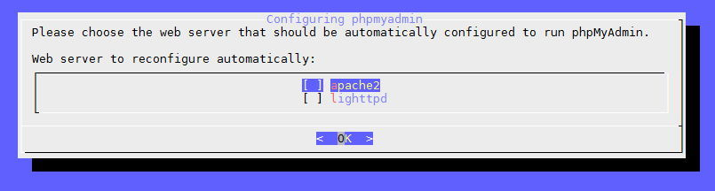
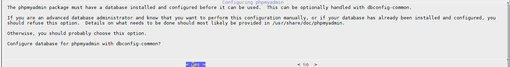

Nếu bạn muốn có thêm phpMyAdmin thì cài thêm bằng cách gõ lệnh:
sudo apt-get install phpmyadmin

Và hãy chọn Yes để thiết lập các cấu hình ban đầu cho phpMyAdmin.

Sau đó hãy nhập mật khẩu root của MySQL Server vào và Enter. Nếu nó có hỏi tạo mật khẩu phpmyadmin application thì cứ dùng cái mật khẩu root của MySQL Server luôn nhé.
Tiếp theo là mở file /etc/apache2/apache2.conf và chèn
đoạn sau vào dưới cuối cùng:
Include /etc/phpmyadmin/apache.conf
Cài xong nhớ khởi động lại Apache.
sudo service apache2 restart
Bây giờ bạn có thể truy cập vào phpMyAdmin với đường dẫn http://IP/phpmyadmin
hoặc http://domain/phpmyadmin.
Nếu bạn sử dụng nginx thì hãy liên kết như sau:
sudo ln -s /usr/share/phpmyadmin /var/www/html
Hoặc là bạn tạo một virtual host trỏ đến /usr/share/phpmyadmin.